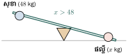
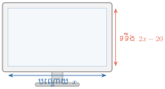

- កំណត់សញ្ញាណវិសមីការដឺក្រេទី 1 មានមួយអញ្ញាត
- ប្រើលក្ខណៈវិសមភាពក្នុងការដោះស្រាយវិសមីការដឺក្រេទី 1 មានមួយអញ្ញាត
- ដោះស្រាយចំណោទវិសមីការដឺក្រេទី 1 មានមួយអញ្ញាត ។
1. វិសមីការដឺក្រេទី 1 មានមួយអញ្ញាត
1.1. សញ្ញាណវិសមីការ
ឧទាហរណ៍ 1 ៖ សុខាមានម៉ាស \(\displaystyle 48\text{ kg}\) និងផល្លីមានម៉ាស \(\displaystyle x\text{ kg}\) ។ តើ \(\displaystyle x\text{ kg}\) និង \(\displaystyle 48\text{ kg}\) មានទំនាក់ទំនងគ្នាយ៉ាងដូចម្តេច?

ដោយក្តារផាត់ទន់ចុះក្រោមទៅខាងផល្លី នោះម៉ាសផល្លីធ្ងន់ជាងសុខា ៖
ឧទាហរណ៍ 2 ៖ គេមានត្រីកោណ \(\displaystyle ABC\) ដែលមានប្រវែងជ្រុង \(\displaystyle BC = x\), \(\displaystyle AC = 2x\), និង \(\displaystyle AB = 12\) ។
តាមវិសមភាពត្រីកោណ ផលបូកប្រវែងជ្រុងពីរធំជាងជ្រុងទី 3 ជានិច្ច ៖
សំណេរខាងលើនេះហៅថា វិសមីការដឺក្រេទី 1 មានមួយអញ្ញាត \(\displaystyle x\) ។
វិសមីការដឺក្រេទី 1 មានមួយអញ្ញាត គឺជាវិសមីការក្រោយពីសម្រួលរួច មានរាង ៖
បំប្លែងកន្សោម \(\displaystyle \frac{1-m}{2}+\frac{m+5}{6}>4-\frac{3m-7}{5}\) ឱ្យទៅជាវិសមីការដឺក្រេទី 1 មានមួយអញ្ញាតងាយមួយ ។
ដំណោះស្រាយ ៖
គុណអង្គទាំងពីរនឹងភាគបែងរួម 30 (ចំនួនវិជ្ជមាន មិនប្តូរទិសដៅ) ៖
ដូច្នេះវិសមីការបង្រួមគឺ \(\displaystyle 8m - 122 > 0\) ជាវិសមីការដឺក្រេទី 1 មានមួយអញ្ញាត ។
សុខានិងចាន់ណាមានម៉ាស \(\displaystyle 42\text{ kg}\) ហើយធីតានិងផល្លីមានម៉ាស \(\displaystyle x\text{ kg}\) ។ បើក្តារផាត់ទន់ចុះក្រោមទៅខាងសុខានិងចាន់ណា តើ \(\displaystyle x\) និង 42 មានទំនាក់ទំនងដូចម្តេច?
ចម្លើយ ៖ \(\displaystyle x < 42\) (ឬ \(\displaystyle 42 > x\)) ។
1.2. វិសមីការសមមូល
វិសមីការពីរហៅថា វិសមីការសមមូល កាលណាវាមានសំណុំឫសដូចគ្នា ។
- បើគេបូក ឬដកចំនួនដូចគ្នាលើអង្គទាំងពីរ គេបានវិសមីការសមមូលនឹងវិសមីការដើម ។
- បើគេគុណ ឬចែកអង្គទាំងពីរនឹងចំនួនវិជ្ជមាន គេបានវិសមីការសមមូល (រក្សាទិសដៅដដែល) ។
- បើគេគុណ ឬចែកអង្គទាំងពីរនឹងចំនួនអវិជ្ជមាន ហើយប្តូរទិសដៅវិសមីការ គេបានវិសមីការសមមូល ។
2. ការដោះស្រាយវិសមីការដឺក្រេទី 1 មានមួយអញ្ញាត
2.1. វិធានបូកនិងដក
ឧទាហរណ៍ 1 ៖ \(\displaystyle x - 15 > 18 \iff x > 18 + 15 \iff x > 33\) ។
ឧទាហរណ៍ 2 ៖ \(\displaystyle 8y + 3 > 9y - 14 \iff 8y - 9y > -14 - 3 \iff -y > -17 \iff y < 17\) ។
ដោះស្រាយវិសមីការ \(\displaystyle 5m - 4 \ge 4m + 11\) ។
ដំណោះស្រាយ ៖
វិសមីការមានឫសគ្រប់តម្លៃ \(\displaystyle m\) ដែលធំជាង ឬស្មើ 15 ។
ដោះស្រាយវិសមីការ ៖
- ក. \(\displaystyle 3(x-2) \ge 2x + 5 \iff 3x - 6 \ge 2x + 5 \iff x \ge 11\)
- ខ. \(\displaystyle 2x < 2(x+1) \iff 2x < 2x + 2 \iff 0x < 2\) (ពិតគ្រប់ចំនួនពិត \(\displaystyle x\))
2.2. វិធានគុណនិងចែក
- បើ \(\displaystyle c > 0\) នោះ \(\displaystyle a > b \iff ac > bc\) និង \(\displaystyle \frac{a}{c} > \frac{b}{c}\)
- បើ \(\displaystyle c < 0\) នោះ \(\displaystyle a > b \iff ac < bc\) និង \(\displaystyle \frac{a}{c} < \frac{b}{c}\) (ប្តូរទិសដៅវិសមីការ)
ដោះស្រាយវិសមីការ \(\displaystyle 5(x-3) - 9 \ge 4(x-3) + 7x\) ។
ដំណោះស្រាយ ៖
ដោះស្រាយវិសមីការ \(\displaystyle (2m-5)(3m+1) + 15m < 2(m+3) + 6m^2 + 10\) ។
ដំណោះស្រាយ ៖
វិសមីការមានចម្លើយច្រើនរាប់មិនអស់ (គ្រប់ចំនួនពិត \(\displaystyle m\)) ។
3. ចំណោទវិសមីការដឺក្រេទី 1 មានមួយអញ្ញាត
នៅពេលធ្វើតេស្តលើមុខវិជ្ជាភាសាខ្មែរនិងប្រវត្តិវិទ្យា សារ៉ុមធ្វើបានពិន្ទុ 82 និង 89 ។ តើសារ៉ុមត្រូវការពិន្ទុលើមុខវិជ្ជាគណិតវិទ្យាប៉ុន្មាន ដើម្បីឱ្យមធ្យមភាគពិន្ទុទាំងបីមុខវិជ្ជាយ៉ាងតិច 90 ពិន្ទុ?
ដំណោះស្រាយ ៖
តាង \(\displaystyle m\) ជាពិន្ទុគណិតវិទ្យា (\(\displaystyle m \ge 0\)) ៖
ដូចនេះ សារ៉ុមត្រូវការពិន្ទុគណិតវិទ្យាយ៉ាងតិច 99 ពិន្ទុ ។
លំហាត់
ដោះស្រាយវិសមីការ ៖
- ក. \(\displaystyle -3x+5\ge x-1\)
- ខ. \(\displaystyle 10x+7<2x-5\)
- គ. \(\displaystyle 5x-6<5x-1\)
- ឃ. \(\displaystyle 7+6x<6x-1\)
- ង. \(\displaystyle x+5\le x+7\)
- ច. \(\displaystyle 2(x+3)<2x+1\)
- ឆ. \(\displaystyle 2.3m+0.75\ge4.2\)
- ជ. \(\displaystyle 4.4-1.3t<5.05\)
មើលដំណោះស្រាយ
- ក. \(\displaystyle -3x-x \ge -1-5 \iff -4x \ge -6 \iff x \le \frac{-6}{-4} = \frac{3}{2}\)
- ខ. \(\displaystyle 10x-2x < -5-7 \iff 8x < -12 \iff x < -\frac{12}{8} = -\frac{3}{2}\)
- គ. \(\displaystyle 5x-5x < -1+6 \iff 0x < 5\) (ពិតគ្រប់ \(\displaystyle x\) នាំឱ្យវិសមីការមានឫសគ្រប់ចំនួនពិត)
- ឃ. \(\displaystyle 6x-6x < -1-7 \iff 0x < -8\) (មិនពិត នាំឱ្យវិសមីការគ្មានឫស)
- ង. \(\displaystyle x-x \le 7-5 \iff 0x \le 2\) (ពិតគ្រប់ \(\displaystyle x\) នាំឱ្យមានឫសគ្រប់ចំនួនពិត)
- ច. \(\displaystyle 2x+6 < 2x+1 \iff 0x < -5\) (មិនពិត នាំឱ្យគ្មានឫស)
- ឆ. \(\displaystyle 2.3m \ge 4.2 - 0.75 = 3.45 \iff m \ge \frac{3.45}{2.3} = 1.5\)
- ជ. \(\displaystyle -1.3t < 5.05 - 4.4 = 0.65 \iff t > \frac{0.65}{-1.3} = -0.5\)
ដោះស្រាយវិសមីការ រួចបកស្រាយចម្លើយលើបន្ទាត់ចំនួន ៖
- ក. \(\displaystyle 7a>-21\)
- ខ. \(\displaystyle -3x-6<0\)
- គ. \(\displaystyle 3x-1\ge5\)
- ឃ. \(\displaystyle 6-\frac{3x-2}{4}<7x+12\)
- ង. \(\displaystyle 3x-20<7x+4\)
- ច. \(\displaystyle \frac{m-1}{3}\ge6\)
- ឆ. \(\displaystyle 8+\frac{6m}{5}\le\frac{8m}{5}+12\)
- ជ. \(\displaystyle \frac{3x-6}{54}<\frac{2x+2}{54}\)
មើលដំណោះស្រាយ
- ក. \(\displaystyle a > \frac{-21}{7} = -3\) (ចម្លើយនៅលើបន្ទាត់ចំនួន ៖ គូសពី \(\displaystyle -3\) ទៅស្តាំ ដោយមិនរាប់ចំណុច \(\displaystyle -3\))
- ខ. \(\displaystyle -3x < 6 \iff x > \frac{6}{-3} = -2\)
- គ. \(\displaystyle 3x \ge 6 \iff x \ge 2\)
- ឃ. គុណនឹង 4 ៖ \(\displaystyle 24 - (3x-2) < 28x + 48 \iff 26 - 3x < 28x + 48 \iff -31x < 22 \iff x > -\frac{22}{31}\)
- ង. \(\displaystyle 3x - 7x < 4 + 20 \iff -4x < 24 \iff x > -6\)
- ច. \(\displaystyle m - 1 \ge 18 \iff m \ge 19\)
- ឆ. \(\displaystyle \frac{6m}{5} - \frac{8m}{5} \le 12 - 8 \iff -\frac{2m}{5} \le 4 \iff m \ge 4 \times \left(-\frac{5}{2}\right) = -10\)
- ជ. \(\displaystyle 3x - 6 < 2x + 2 \iff x < 8\)
ដោះស្រាយវិសមីការ រួចបកស្រាយចម្លើយលើបន្ទាត់ចំនួន ៖
- ក. \(\displaystyle 2x+7>3x-2\)
- ខ. \(\displaystyle 3x-\frac{x}{2}<1+\frac{x}{3}\)
- គ. \(\displaystyle \frac{m}{2}+\frac{m}{3}+2m>3\)
- ឃ. \(\displaystyle \frac{m-1}{4}-3<\frac{3(m+1)}{8}\)
- ង. \(\displaystyle \frac{5(x+1)}{6}-1<\frac{9x+1}{3}-\frac{8x+1}{4}\)
- ច. \(\displaystyle \frac{3x-1}{4}-\frac{13-x}{2}<\frac{7x}{3}-\frac{11(x+3)}{6}\)
- ឆ. \(\displaystyle 2+\frac{3(m+1)}{8}<3-\frac{m-1}{4}\)
- ជ. \(\displaystyle \frac{2x}{25}-\frac{9}{25}<\frac{13}{21}+\frac{5x}{7}-\frac{x}{15}\)
មើលដំណោះស្រាយ
- ក. \(\displaystyle 2x - 3x > -2 - 7 \iff -x > -9 \iff x < 9\)
- ខ. \(\displaystyle \frac{5x}{2} - \frac{x}{3} < 1 \iff \frac{13x}{6} < 1 \iff x < \frac{6}{13}\)
- គ. ភាគបែងរួម 6 ៖ \(\displaystyle 3m + 2m + 12m > 18 \iff 17m > 18 \iff m > \frac{18}{17}\)
- ឃ. គុណនឹង 8 ៖ \(\displaystyle 2(m-1) - 24 < 3(m+1) \iff 2m - 26 < 3m + 3 \iff -m < 29 \iff m > -29\)
- ង. គុណនឹង 12 ៖ \(\displaystyle 10(x+1) - 12 < 4(9x+1) - 3(8x+1) \iff 10x - 2 < 12x + 1 \iff -2x < 3 \iff x > -\frac{3}{2}\)
- ច. គុណនឹង 12 ៖ \(\displaystyle 3(3x-1) - 6(13-x) < 28x - 22(x+3) \iff 15x - 81 < 6x - 66 \iff 9x < 15 \iff x < \frac{5}{3}\)
- ឆ. គុណនឹង 8 ៖ \(\displaystyle 16 + 3(m+1) < 24 - 2(m-1) \iff 3m + 19 < 26 - 2m \iff 5m < 7 \iff m < \frac{7}{5}\)
- ជ. គុណនឹង 525 ៖ \(\displaystyle 42x - 189 < 325 + 375x - 35x \iff -298x < 514 \iff x > -\frac{257}{149}\)
ដោះស្រាយវិសមីការ រួចបកស្រាយចម្លើយលើបន្ទាត់ចំនួន ៖
- ក. \(\displaystyle x-3\le7\)
- ខ. \(\displaystyle x-5<5\)
- គ. \(\displaystyle x+30>50\)
- ឃ. \(\displaystyle x+\frac{3}{4}>\frac{3}{4}\)
- ង. \(\displaystyle -\frac{2}{7}t\ge\frac{2}{7}\)
- ច. \(\displaystyle -\frac{3}{11}q\le\frac{3}{22}\)
- ឆ. \(\displaystyle 2x-5+3x>-5x+15\)
- ជ. \(\displaystyle y+3(2y+1)\le12+y\)
- ឈ. \(\displaystyle x+1.5\ge0.5\)
- ញ. \(\displaystyle x-100\ge200\)
- ដ. \(\displaystyle 2+3x<2x+1\)
- ឋ. \(\displaystyle -5+6m\ge5m+2\)
- ឌ. \(\displaystyle 3a-5+2a-7\le8a+a-12+2\)
មើលដំណោះស្រាយ
- ក. \(\displaystyle x \le 7+3 = 10\)
- ខ. \(\displaystyle x < 5+5 = 10\)
- គ. \(\displaystyle x > 50-30 = 20\)
- ឃ. \(\displaystyle x > \frac{3}{4}-\frac{3}{4} = 0\)
- ង. \(\displaystyle t \le \frac{2/7}{-2/7} = -1\)
- ច. \(\displaystyle q \ge \frac{3/22}{-3/11} = -\frac{1}{2}\)
- ឆ. \(\displaystyle 5x - 5 > -5x + 15 \iff 10x > 20 \iff x > 2\)
- ជ. \(\displaystyle 7y + 3 \le 12 + y \iff 6y \le 9 \iff y \le \frac{3}{2}\)
- ឈ. \(\displaystyle x \ge 0.5 - 1.5 = -1\)
- ញ. \(\displaystyle x \ge 200 + 100 = 300\)
- ដ. \(\displaystyle 3x - 2x < 1 - 2 \iff x < -1\)
- ឋ. \(\displaystyle 6m - 5m \ge 2 + 5 \iff m \ge 7\)
- ឌ. \(\displaystyle 5a - 12 \le 9a - 10 \iff -4a \le 2 \iff a \ge -\frac{1}{2}\)
ផលដករវាង 2 និងមួយចំនួនធំជាងផលបូករវាង 3 និងពីរដងនៃចំនួននោះ ។ រកចំនួនទាំងអស់ដែលផ្ទៀងផ្ទាត់បម្រាប់ខាងលើ ។
មើលដំណោះស្រាយ
តាង \(\displaystyle x\) ជាចំនួននោះ គេបានវិសមីការ ៖
\[2 - x > 3 + 2x \iff -x - 2x > 3 - 2 \iff -3x > 1 \iff x < -\frac{1}{3}\]ដូចនេះ គ្រប់ចំនួនពិត \(\displaystyle x\) ដែលតូចជាង \(\displaystyle -\frac{1}{3}\) សុទ្ធតែផ្ទៀងផ្ទាត់ ។
ក្រុមហ៊ុនទេសចរណ៍មួយបាននាំភ្ញៀវទៅទស្សនានៅប្រាសាទអង្គរវត្តចំនួន 3 លើក ។ លើកទី 1 មានចំនួន 120 នាក់ និងលើកទី 2 មានចំនួន 220 នាក់ ។ តើក្រុមហ៊ុនទេសចរណ៍នោះ ត្រូវនាំភ្ញៀវទេសចរណ៍លើកទី 3 ប៉ុន្មាននាក់ទៀត ដើម្បីឱ្យបានមធ្យមនៃការនាំភ្ញៀវយ៉ាងតិចបានចំនួន 140 នាក់?
មើលដំណោះស្រាយ
តាង \(\displaystyle x\) ជាចំនួនភ្ញៀវលើកទី 3 (\(\displaystyle x \ge 0\)) ៖
\[\frac{120 + 220 + x}{3} \ge 140 \iff 340 + x \ge 420 \iff x \ge 420 - 340 = 80\]ដូចនេះ ក្រុមហ៊ុនត្រូវនាំភ្ញៀវលើកទី 3 យ៉ាងតិច 80 នាក់ ។
ឡាវីបានទទួលពិន្ទុ \(\displaystyle 82\%\), \(\displaystyle 91\%\) និង \(\displaystyle 84\%\) ក្នុងការប្រឡងគណិតវិទ្យាបីខែដំបូង ។ រកពិន្ទុរបស់នាងដែលទទួលបានសម្រាប់ខែទី 4 ដើម្បីឱ្យការប្រឡងទាំងបួនលើកមានមធ្យមភាគនៅចន្លោះ \(\displaystyle 80\%\) និង \(\displaystyle 89\%\) ។
មើលដំណោះស្រាយ
តាង \(\displaystyle x\) ជាពិន្ទុខែទី 4 (\(\displaystyle 0 \le x \le 100\)) ៖
\[80 \le \frac{82 + 91 + 84 + x}{4} \le 89 \iff 320 \le 257 + x \le 356 \iff 63 \le x \le 99\]ដូចនេះ ពិន្ទុខែទី 4 ត្រូវទទួលបាននៅចន្លោះពី \(\displaystyle 63\%\) ដល់ \(\displaystyle 99\%\) ។
ហាងលក់មួកសុវត្ថិភាពមួយកន្លែងបានទិញមួកនីមួយៗ ថ្លៃ 55 000 រៀល និងថ្លៃដឹកជញ្ជូនអស់ប្រាក់ 250 000 រៀល ។ បើហាងនោះលក់មួកចេញវិញមួយថ្លៃ 80 000 រៀល តើហាងនោះត្រូវការទិញមួកចំនួនប៉ុន្មាន ដើម្បីឱ្យបានប្រាក់ចំណេញយ៉ាងតិចបំផុត 800 000 រៀល?
មើលដំណោះស្រាយ
តាង \(\displaystyle x\) ជាចំនួនមួកដែលត្រូវទិញ (\(\displaystyle x \in \mathbb{N}\)) ៖
- ប្រាក់ចំណូល ៖ \(\displaystyle 80~000x\text{ រៀល}\)
- ប្រាក់ដើមសរុប ៖ \(\displaystyle 55~000x + 250~000\text{ រៀល}\)
- ប្រាក់ចំណេញ ៖ \(\displaystyle 80~000x - (55~000x + 250~000) = 25~000x - 250~000\)
តាមបម្រាប់ ប្រាក់ចំណេញយ៉ាងតិច 800 000 រៀល ៖
\[25~000x - 250~000 \ge 800~000 \iff 25~000x \ge 1~050~000 \iff x \ge \frac{1~050~000}{25~000} = 42\]ដូចនេះ ហាងត្រូវទិញមួកយ៉ាងតិចបំផុត 42 មួក ។
អេក្រង់កុំព្យូទ័រមួយមានទទឹងប្រវែង \(\displaystyle 20\text{ cm}\) ខ្លីជាងពីរដងនៃប្រវែងបណ្តោយ ។ រកប្រវែងវិមាត្រអប្បបរមាគិតជា \(\displaystyle \text{cm}\) នៃអេក្រង់កុំព្យូទ័រនោះ ។

មើលដំណោះស្រាយ
តាង \(\displaystyle x\) ជាប្រវែងបណ្តោយ នោះទទឹងគឺ \(\displaystyle w = 2x - 20\) ។
ដោយទទឹងជាវិមាត្រពិតនៃអេក្រង់ ៖\[w > 0 \iff 2x - 20 > 0 \iff 2x > 20 \iff x > 10\text{ cm}\]ដូចនេះ ប្រវែងបណ្តោយអប្បបរមាត្រូវធំជាង \(\displaystyle 10\text{ cm}\) និងទទឹងធំជាង \(\displaystyle 0\text{ cm}\) (បើគិតជាចំនួនគត់ ប្រវែងបណ្តោយយ៉ាងតិច \(\displaystyle 11\text{ cm}\) និងទទឹងយ៉ាងតិច \(\displaystyle 2\text{ cm}\)) ។
ខ្លឹមសារ៖ សៀវភៅពុម្ពគណិតវិទ្យាថ្នាក់ទី៨ របស់ក្រសួងអប់រំ យុវជន និងកីឡា · វាយអត្ថបទ គូររូបភាពឡើងវិញ និងរៀបចំលើអនឡាញដោយលោកគ្រូ សាន សុខលី សម្រាប់ការសិក្សាដោយឥតគិតថ្លៃ និងមិនរកប្រាក់ចំណេញ។ មិនមែនជាការបោះពុម្ពផ្លូវការរបស់ក្រសួងទេ។